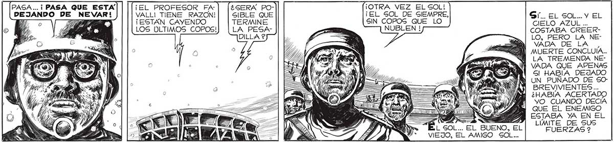
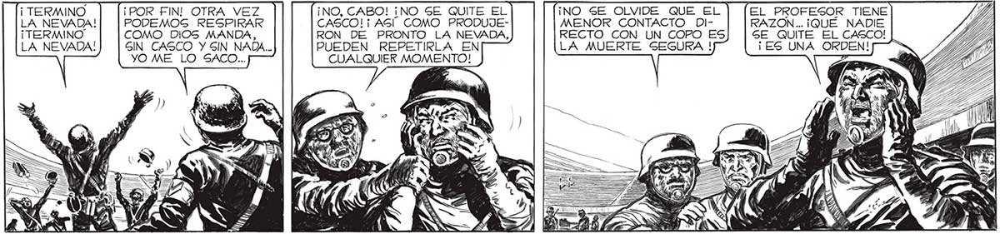
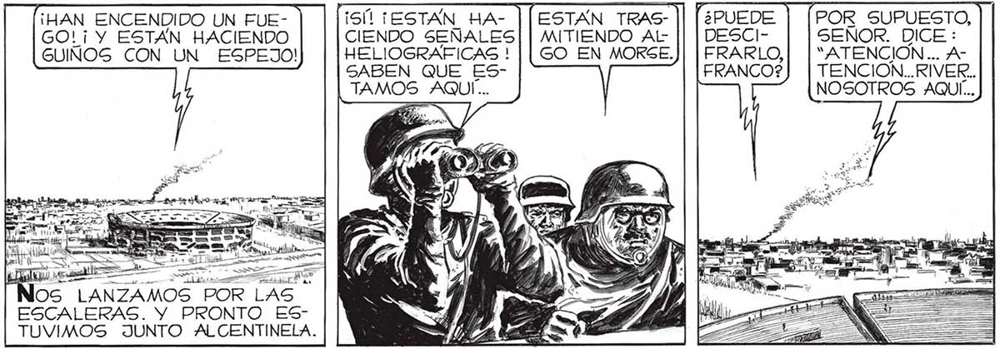

120 PAGA... ¡ PASA QUE ESTA DEJANDO DE NEVAR! ¡EL PROFESOR FA] [¿seRA Po- (¡OTRA VEZ EL SOL! VALL| TIENE RAZON! | | SIBLE QUE ¡EL SOL DE SIEMPRE, Sí. EL SOL... Y EL ¡ESTÁN CAYENDO TERMINE SIN COPOS QUE LO a CIELO AZUL ... LOS ÚLTIMOS COPOS! e NUBLEN ! COSTABA CREERYA DILLA ? y Po : LO, PERO LA NEY € SD VÁDA DE LA . MUERTE CONCLUÍA.. WU OLA TREMENDA NEÍ VADA QUE APENAS Gl HABÍA DEJADO Í UN PUÑADO DE SOBREVIVIENTES... ¿HABÍA ACERTADO yO CUANDO DECÍA Wwe QUE EL ENEMIGO Sel A ESTABA YA EN EL DN LIMITE DE SUS BUENO, EL FUERZAS 2 VIEJO, EL AMIGO SOL... " ¡ TERMINO ¡POR FIN! OTRA VEZ ¡NO, CABO! ¡NO SE QUITE EL ¡NO SE OLVIDE QUE EL EL PROFESOR TIENE LA NEVADA! PODEMOS RESPIRAR CASCO! ¡ ASI COMO PRODUJE- MENOR CONTACTO DI- RAZON... ¡QUÉ NADIE ¡ TERMINO COMO DIOS MANDA, RON DE PRONTO LA NEVADA, RECTO CON UN COPO ES SE QUITE EL CASCO! LA NEVADA! SIN CASCO Y SIN NADA... PUEDEN REPETIRLA EN LA MUERTE SEGURA ! ¡ES UNA ORDEN! YO ME LO SACO... CUALQUIER MOMENTO! san ..PARECIO ROBUSTECER ¡HAN ENCENDIDO UN FUE- 5 POR SUPUESTO, MI OPTIMISMO DE POCO GO! i Y ESTÁN HACIENDO : SENOR. DICE : LA PRUDENCIA ANTES... GUINOS CON UN ESPEJO! HELIOGRAFICAS ! , “ATENCION... ADE FAVALLI, SABEN QUE ES- ? TENCION...RIVER.. NOS PRIVO TAMOS AQUÍ... NOSOTROS AQUÍ... DE GOZAR ”- a PLENAMENTE EL ALIVIO ENORME QUE REPRESENTABA EL FINAL DE > po LA ALUCINANTE NEVADA. LO , UN MOMENTO == E M == PA IS IPD — A A DESPUÉS... E AED ut A S LANZAMOS POR LAS ESCALERAS. Y PRONTO ESTUVIMOS JUNTO ALCENTINELA.


